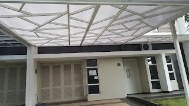

Kian berkembangnya kemajuan zaman, menciptakan banyak bahan atau material pelengkap yang dapat mempercantik hunian atau tempat usaha anda. Banyak material pensupport yang dapat diaplikasikan seperti kaca, parket lantai kayu dan masih banyak lagi. Tak hanya memperindah, tetapi material pelangkap tersebut bisa memberi garansi keamanan pada penghuni di dalamnya. Tetapi sekarang, penerapan kaca semakin meluas. Kaca juga berfungsi sebagai tempat keluar masuknya sinar matahari pada sebuah bangunan. Maka dari itu, benda ini cukup penting dipakai pada sebuah bangunana.
Variasi-jenis kaca diantara lain kaca tempered, kaca shower, railing kaca, kanopi kaca dan masih banyak lagi. Tidak hanya material kaca sekarang juga terdapat material kayu atau parket lantai kayu jati. Berikut ini sedikit penjelasan mengenai berbagai jenis kaca dan fungsi kaca dan juga parket lantai kayu jati yang bisa anda dapatkan.
Jual Kaca Cermin di Batam
Kaca cermin bisa diciptakan aksesoris untuk mempercantik interior rumah Anda. Ini tak cuma sebagai kaca cermin Batam persegi. Ada banyak sekali desain cermin yang bisa Anda pilih. Ukurannya malah bisa Anda sesuaikan dengan kebutuhan. Jadi, Anda mempunyai banyak alternatif untuk menentukan cermin yang Anda pilih benar-benar dapat mempercantik interior rumah Anda. Untuk membikin ruangan private, maka kaca ini transparan jika dipandang dari dalam. Cermin minimalis mempunyai siku. Anda seolah sedang berkaca.
Dis.or.id merupakan penyedia beraneka ukuran kaca cermin Batam yang bisa anda aplikasikan ke gedung, kantor maupun rumah anda. Ada yang terbuat dari plastik, kayu, dan aluminum. Atau barangkali Anda mengharapkan kaca cermin Batam yang lantas bisa ditempelkan pada komponen furniture tertentu seperti pintu lemari. Anda bisa menambahkan bingkai atau tanpa bingkai cocok dengan kesukaan Anda. Atau Anda bisa buat pintu kaca cermin Batam. Tersedia kaca tempered Batam dengan berjenis-jenis ukuran yang dapat anda pesan di dis.or.id. Tak anda tertarik untuk memiliki kaca tempered Batam bagus sebagai pemanis ruangan atau sebagai pintu, anda dapat segera mengunjungi dis.or.id.
Info Pemesanan Selengkapnya
Google Maps: https://www.google.com/maps/d/u/0/viewer?mid=1HNPQwTg5M-VmcXHvNbVncTuxY7ALbdIQ&ll=-7.27380280025364%2C112.65243155000007&z=18
Note: https://www.facebook.com/notes/distributor-of-industrial-supply/pabrik-supplier-kaca-cermin/1785720801727799/
Event: https://www.facebook.com/events/135275393812568/
Distributor & Supplier Pintu Kaca
Kini sudah hadir ratusan pintu kaca dengan desain yang berbeda-beda yang bisa di buat dan di pesan, entah itu pintu kaca frameless (tanpa pigura) atau pintu kaca dengan bingkai. Tidak cuma di gedung atau perkantoran, tapi pntu kaca juga dapat anda aplikasikan pada rumah agar sinar dapat seketika masuk pada ruangan dan memberikan suasana hangat. Dengan beraneka varian frame seperti pigura kayu atau alumunium dan tanpa pigura atau frameless yang adalah desain pintu kaca tanpa pigura. Daya jenis kaca yang bisa Anda pilih untuk pintu kaca Anda seperti kaca tempered yang sedang booming atau kaca non-tempered yang harganya lebih terjangkau. Sekarang tidak kalah penting lagi yaitu pemilihan kaca. Dalam hal ini, terdapat sebagian ragam kaca dengan mutu yang terbaik.
Anda bisa mempunyai pintu kaca favorit anda kini juga dengan mengunjungi dis.or.id. Dengan daya spesialis yang telah amat handal dalam membuat berjenis-jenis figur pintu kaca.
Dis.or.id juga menyiapkan beberapa jenis kaca dengan ketebalan yang berbeda. Dis.or.id memiliki energi yang sudah benar-benar profesional di bidang ini.
Jasa Pemasangan Railing Kaca

Railing kaca sekarang semakin banyak opsinya. Tak Anda ingin mempunyai rumah dengan desain interior minimalis, sungguh-sungguh tepat dikala komponen tangga dan juga balkon menggunakan railing kaca ini. Bahkan juga komponen pegangan atau bingkainya. Pastikan bagian hal yang demikian terbuat dari bahan aluminum yang kuat. Tetapi, Anda mesti pastikan railing kaca bermutu terbaik. Malahan juga bahan yang diaplikasikan.
Dalam hal ini, Anda dapat memastikan sendiri berapa ketebalan dari kaca yang diterapkan tersebut. Ini adalah macam kaca yang betul-betul bagus dan kuat. Kaca ini betul-betul kuat dan juga aman. Dikatakan sungguh-sungguh aman lantaran kaca tempered tidak memunculkan pecahan yang runcing ketika tiba-tiba kaca pecah entah itu akibat kecelakaan atau musibah seperti gempa. Jika kaca, observasi juga aluminum yang menjadi framenya. Kecuali disana terdapat banyak tersedia berjenis-jenis ukuran railing kaca dengan desain yang anda inginkan. Pastikan juga aluminum ini benar-benar baik dan kuat.
Harga yang betul-betul ekonomis serta mutu terbaik yang telah terjamin membuat anda tidak akan menyesal membeli railing kaca di dis.or.id.
Distributor, Supplier & Jasa Pasang Kanopi Kaca

Banyak tipe kaca kanopi yang digunakan sebagai atap, tak cuma satu tipe saja. Diantaraya merupakan kaca tempered 8 mm, kaca tempered 10 mm clear, kaca tempered 12 mm clear, kaca laminated 12 mm clear, kaca laminated 5 mm + 5 mm clear non tempered kaca, kaca laminated 5 mm + 5 mm tempered clear dan masih banyak lagi. Harga dari setiap kaca yang ditawarkan cukup berbagai tergantung kaca yang nanti akan diterapkan. Ada banyak pilihan varian desain. Di samping pintu kaca shower akan membikin kamar mandi kecil menonjol lebih besar.
Tak anda ketika ini sedang memerlukan kanopi kaca, anda dapat lantas mengunjungi dis.or.id. Harga untuk tiap pemasangan pun pelbagai pantas dengan kebutuhan anda.
Distributor & Supplier Kaca Shower
Pintu Kaca Shower pada kamar mandi merupakan salah satu opsi yang baik untuk desain interior kamar mandi modern. Selain hal yang demikian sekarang dapat anda lakukan dengna memakai kaca shower untuk kamar mandi anda. Tak cuma cantik tapi kaca shower bisa menjadi kaca pembatas antara lantai kering dan basah pada kamar mandi. Penyekat ini akan memisahkan antara daerah berair yang dipakai untuk mandi atau meletakan shower dan daerah lain yang merupakan zona kering. Selain ini akan berpengaruh kepada biaya yang akan dikeluarkan untuk membayar tukang.
Tak anda sedang memerlukan kaca shower untuk kamar mandi anda, anda dapat segera mengunjungi dis.or.id. Disana tersedi kaca shower dengan pelbagai ukuran dan juga harga yang juga cukup terjangkau. Tidak terbaik dan harga relatif murah. Anda dapat buktikan sendiri.
Distributor, Supplier & Jasa Pasang Kanopi Kaca

Kanopi kaca kian banyak diminati sebab kini telah banyak bangunan yang mengaplikasikan bahan kaca untuk lebih mempercantik tampilan rumah. Seiring dengan perkembangan zaman di dunia properti, kini kanopi kaca terlah berkembang cepat meniru arsitektur modern . Sifat utama material bahan atap akrilik juga dapat disebut atap acrylic, ini merupakan warnanya yang jernih tembus pandang. Harga atap kaca per meter persegi juga sungguh-sungguh dipengaruhi oleh struktur penunjang yang di gunakan. Ada beberapa alasan mengapa Pintu Kaca Shower banyak digunakan salah satunya adalah kaca lebih menonjol bersih dan rapi dan juga lebih mudah dalam perawatannya. Sekiranya tembus pandang, kaca mengabsorpsi sinar yang masuk sehingga kian tebal kaca karenanya kian sedikit sinar yang dapat melewatinya, karenanya sifat transparannya makin berkurang.|Di samping pintu kaca shower akan membuat kamar mandi kecil terlihat lebih besar. Pada atap akrilik, penyerapan cahaya yang terjadi demikian kecil sehingga sedangkan ketebalannya bertambah, sifat transparannya tak banyak berubah. Atap akrilik atau bisa juga disebut atap kaca acrylic ini banyak ditemukan di sebuah bangunan rumah, seperti ruko, apartemen, kafe, mall, hingga bangunan gedung.
Tak anda tertarik untuk memasang kaca kanopi pada rumah, gedung ataupun kantor, anda bisa segera mengunjungi dis.or.id. Disana anda dapat mendapatkan atap kanopi kaca dengan kwalitas terbaik dan harga terjangkau. Banyak bangunan seperti gedung perkantoran, perumahan, ruko dan apartement yang menerapkan kanopi kaca tempered. Seandainya fungsi utama kanopi sebagai pelindung untuk bangunan hal yang demikian, pemasangan kanopi kaca juga dapat membuat bangunan menjadi kelihatan lebih cantik dan menarik, apalagi menerapkan konsep yang sama dengan konsep rumah minimalis. Setelah kaca untuk atap kanopi cukup digemari. Tak anda sedang mencari kanopi kaca, anda bisa segera mengunjungi dis.or.id. Disana anda akan memperoleh kanopi kaca yang pantas dengan berjenis-jenis ketebalan dan harga yang cukup relatif murah.
Jasa Maintenance Kaca
Jasa maintenance kaca menawarkan pelayanan perawatan bahan bangunan yang terbuat dari kaca. Umumnya ditahui banyak pemilik gedung kaca yang berkeinginan merawat bangunan. Beragam, kaca akan kelihatan kusam sebab sudah lama tidak dibersihkan. Dis.or.id mempunyai daya pakar yang bisa cakap membersihkan gedung pencakar langit yang bangunannya terbuat dari kaca.
Dengan menerapkan bahan pembersih yang akan membuat kaca menonjol bersih seperti pertama kali dipasang.
Dis.or.id memahami semakin banyak gedung pencakar langit dengan betuk yang berbeda-beda. Dengan kekuatan ahli yang siap untuk menjalankan pembersihan dan bahan pembersih yang di miliki, kaca gedung perkantoran Anda akan tampak seperti baru lagi. Dis.or.id juga sudah mempersiapkan dengan bermacam alat yang bisa diaplikasikan untuk menjangkau semua sudut gedung, sekalipun gedung Anda sangat tinggi. Oleh sebab itu, dis.or.id hanya memilih orang-orang yang betul-betul profesional dan telah memiliki pengalaman dalam hal maintenance kaca.
Jasa Pemasangan Kaca Tempered

Tak yang telah di ketahui bahwa jasa pemasangan kaca tempered hanya dijalankan oleh orang yang profesional. Semakin banyak orang yang berharap menerapkan kaca ini. Masyarakat sudah mengerti keunggulan dari kaca ini. Sementara itu, untuk rumah hunian, komponen dari rumah seperti kamar mandi serta kanopi biasanya terbuat dari kaca tempered. Banyak bagian properti yang dapat dijadikan dengan bahan berupa kaca tempered. Untuk gedung perkantoran, bagian yang paling sering kali diwujudkan dengan bahan yang satu ini yaitu jendela dan pintu. Namun dulu cuma gedung perkantoran atau pusat perbelanjaan modern saja yang memakai ragam kaca ini, kini rumah hunian juga sudah dibangun dengan kaca tempered.
Sementara itu, untuk hunian, kanopi dan kamar mandi menjadi komponen yang paling menarik apabila dijadikan dari bahan kaca tempered. Tak anda tertarik untuk memasang kaca temeperd, anda cuma tinggal mengunjungi website dis.or.id. Sekiranya aman kaca tempered juga sanggup memberikan kesan estetika yang sungguh-sungguh bagus dibandingkan dengan kata variasi lainnya. Harga yang ditawarkan untuk pemasangan kaca tempered betul-betul murah.
Distributor & Supplier Pintu Lipat Kaca
Karena keunggulan yang dimiliki tersebut, Anda pasti berdaya upaya harga pintu kaca lipat frameless ini mahal. Kalau ruang makan bersebelahan dengan taman, Anda bisa sekat dengan pintu lipat kaca ini. Tapi diakui bahwasannya ada jenis kaca yang harganya di bawah kaca tempered. Tapi, Jika Anda hitung kembali, selisih harganya tidaklah terlalu banyak.
Tidak cuma itu, pintu lipat kaca dapat Anda pasang di kamar lantai atas yang ada balkon. Tetapi bukan itu saja, aksesoris komplementer juga berpengaruh. Anda seharusnya memutuskan aksesoris yang melengkapi pintu kaca lipat mempunyai mutu terbaik, seperti figur hinges.
Jasa Pemasangan Kubikel Toilet

Kubikel toilet memiliki desain yang mewah dan elegan sehingga siapa saja yang melihatnya pasti akan tertarik, tidak hanya itu kubikel kaca memberikan kesan bersih, rapid an tersusun. Kubikel kamar mandi adalah kaca pembatas yang dipakai pada WC.
Kaca kini banyak dipakai sebagai penyekat ruang. Salah satunya di kamar mandi. Kubikel kamar mandi atau kubikel kamar mandi ini lebih murah di banding dengan pembuatan kamar mandi atau kamar mandi konvensional. WC kubikel juga memberikan hal yang efisien dan efektif dalam pembagian space kamar mandi yang kecil.
Keuntungan dari sekat kaca memberikan adalah dapat memberikan efek luas karena ruangan tersekat tetapi secara visual tak.
Kalau anda ketika ini sedang membutuhkan kaca shower untuk kamar mandi, lantas saja kunjungi dis.or.id untuk melakukakn pengorderan maupun menanyakan detil harga dari kaca shower.
Distributor & Supplier Partisi Kaca

Partisi kaca digunakan dimana saja. Tak cuma sebagai pembatas di mall, hotel, atau kantor-kantor saja, namun juga diterapkan sebagai sekat ruangan di rumah hunian. Telah banyak properti yang memakai bahan berupa kaca sebagai partisi. Anda bisa lihat di sentra perbelanjaan modern, hotel, dan juga perkantoran. Dalam hal ini, Anda semestinya tahu kaca apa yang bagus untuk partisi. itu, tentukan juga desainnya apakah partisi kaca hal yang demikian frameless (tanpa ) atau dengan pigura. Kecuali itu, pertimbangkan juga privacy. Ini yang akan Anda memastikan hal yang tepat apakah Anda memakai kaca transparan, semi transparan, atau kaca cermin Batam. Tidak cuma rumah, perkantoran juga dihasilkan sedemikian rupa supaya amat minimalis dan menarik. Atas pertimbangan efisiensi, karenanya banyak orang yang beralih ke partisi kaca. Kwalitas, sekarang banyak rumah hunian yang mengaplikasikan partisi kaca. Bahkan ruangan disekat dengan partisi ini seperti kamar mandi dalam dan taman dalam ruangan. Anda patut tahu ada kaca transparan, semi transparan dan kaca yang sama sekali tidak transparan yang kerap kali disebut dengan kaca tempered Batam. Dis.or.id beraneka kaca penyekat yang kualitasnya terbaik. Disana anda akan partisi kaca yang dengan kemauan anda.